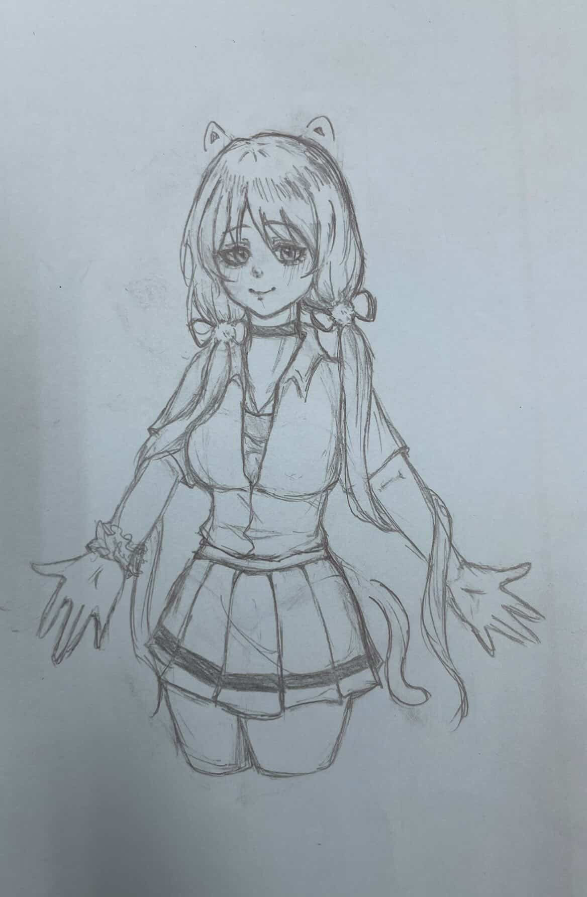
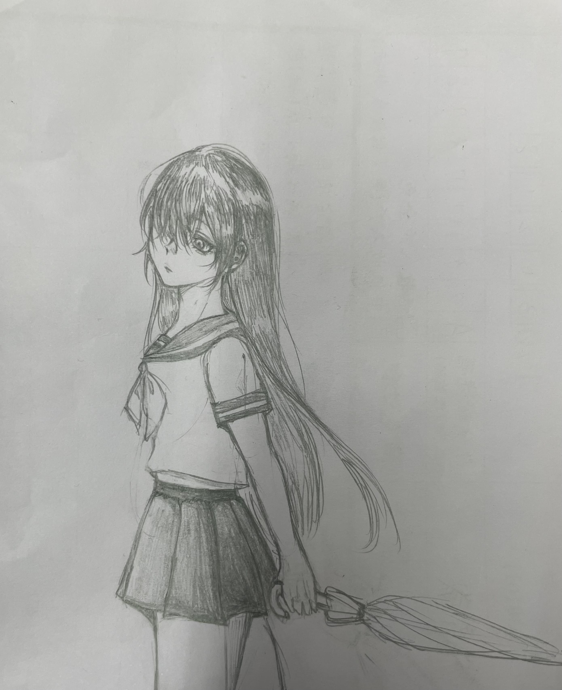
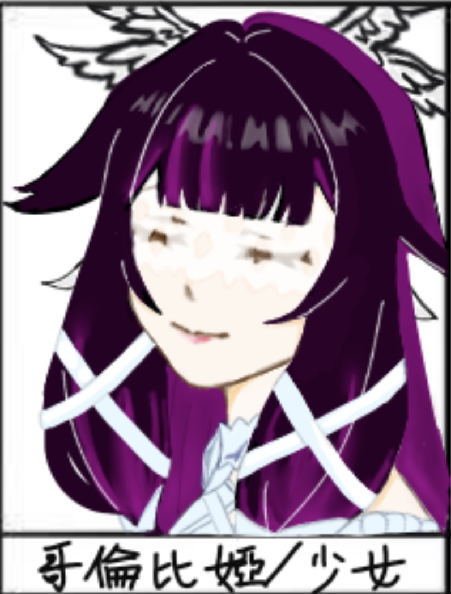
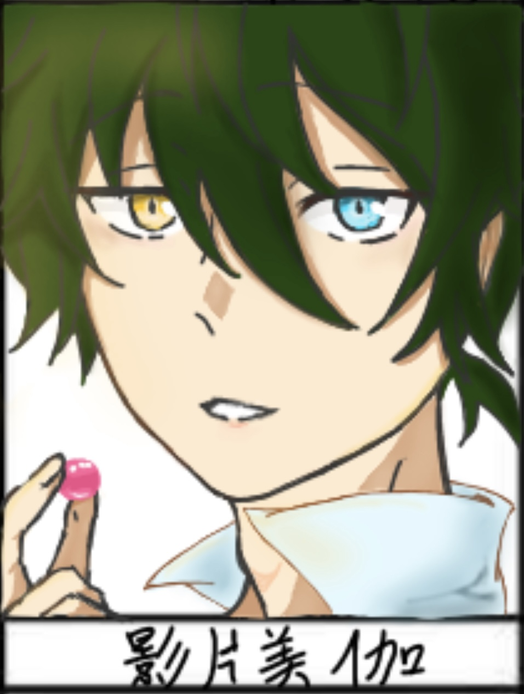
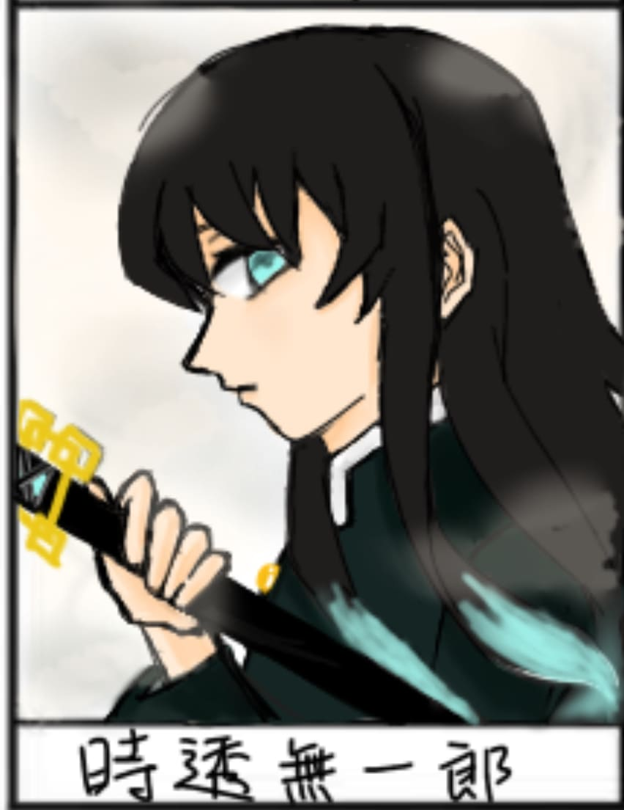
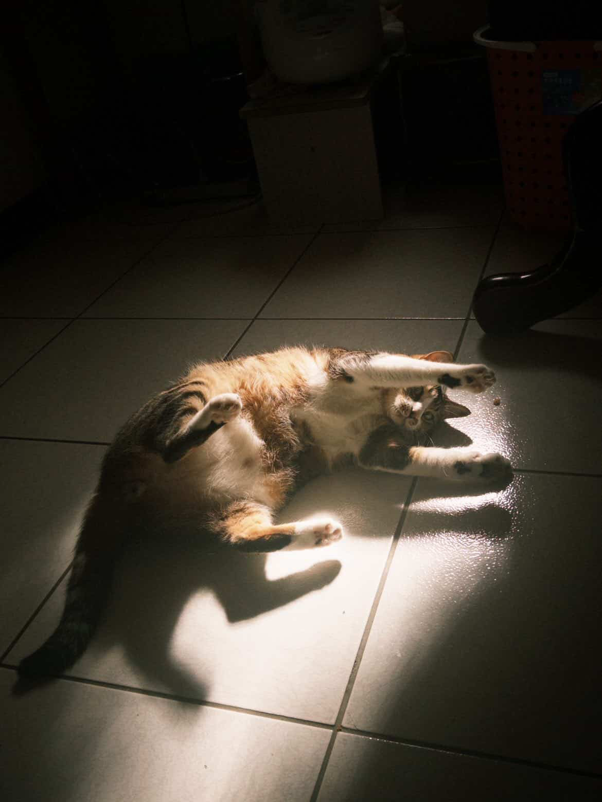
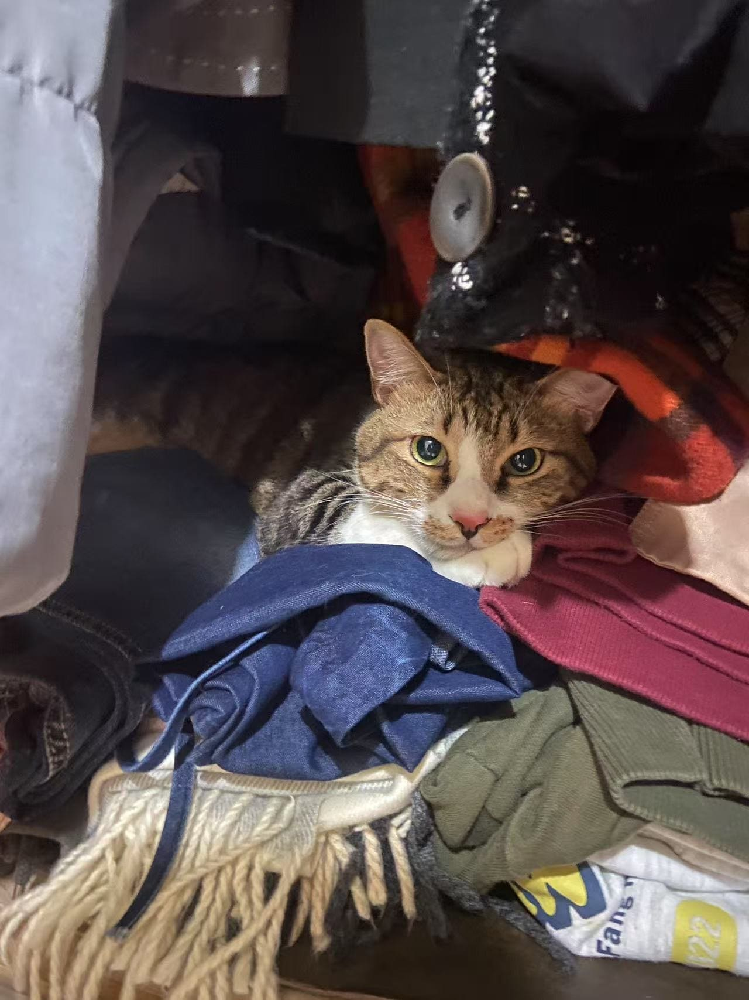

楊宥葳 Winnie
臺北市木柵路一段十七巷一號 · (02) 2236-8225 ·
A114070059@email.shu.edu.tw
曾就讀萬芳高中，現就讀世新大學資訊傳播學系，未來想往設計相關的領域發展。平常愛好看小說和玩遊戲，是個隨和的人。
曾就讀萬芳高中，現就讀世新大學資訊傳播學系，未來想往設計相關的領域發展。平常愛好看小說和玩遊戲，是個隨和的人。
去過日本和中國大陸，體驗當地特色，令人難忘的瞬間有很多。
曾擔任過旭集的外場人員，是一個不錯的經歷，累積不少經驗提早與社會連結。
不間斷的鑽研繪畫方面的知識與技巧，從一開始的手繪慢慢發展到如今的指繪，從一開始的黑白畫到現在的彩色畫，全憑熱愛支撐著。
去可以無限暢飲的餐廳喜歡把飲料混再一起喝，汽水紅茶果汁什麼的都嘗試過。其中，最喜歡蘋果汁加檸檬風味汽水，喝起來就是蘋果西打。
學號：A114070059
曾就讀，現已畢業，目前最高學歷。
曾就讀，現已畢業。





我的興趣有畫畫、聽歌和吃甜食
畫畫對我來說是一種放鬆的方式，無論是隨手畫還是慢慢完成一幅作品，都能讓我沉浸在自己的世界裡感到愉快。每當有新的靈感，我就會拿起筆把腦海中的畫面畫下來。 而聽歌同樣也會讓我的心情變好，喜歡聽柔和、悲傷與古風的類型，不同風格的歌會帶給我不同的感受。偶爾也會給我提供靈感，在畫畫、放鬆或著獨處時，都少不了音樂的陪伴。 甜點則是我生活中的美好存在。在生活中會感到疲倦和悲傷等負面情緒，這時不管是蛋糕、餅乾還是巧克力，只要吃到甜點，整個心情都會瞬間變好。


